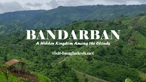
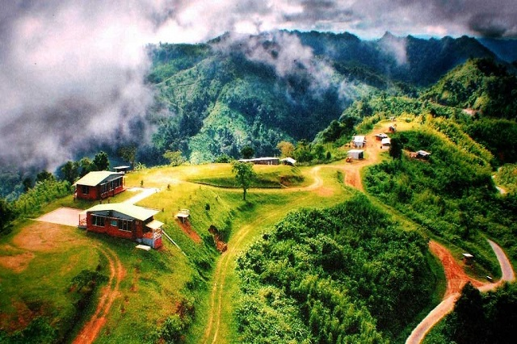
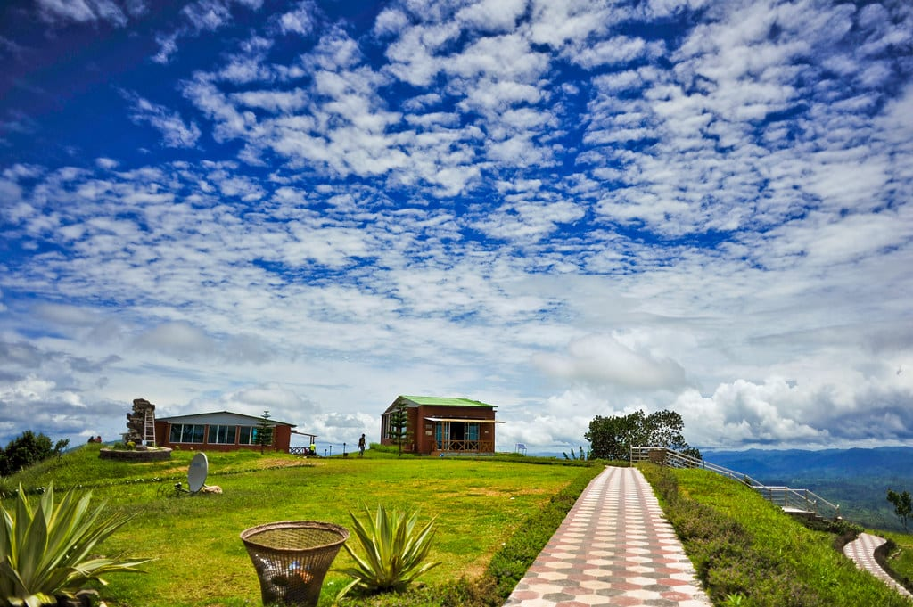

Bandarban District (Bengali: বান্দরবান জেলা), officially Bandarban Hill District, is a district in South-Eastern Bangladesh, and a part of the Chittagong Division.
Tourists visit Bandarban for its breathtaking landscapes, offering a mix of adventure and cultural immersion. As the most mountainous region in Bangladesh, it draws travelers seeking off-the-beaten-path experiences



If you are interested to know more about Bandarban, you may visit the link below.